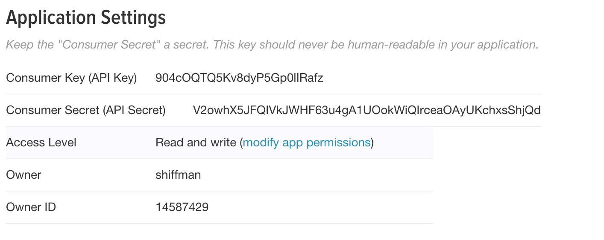
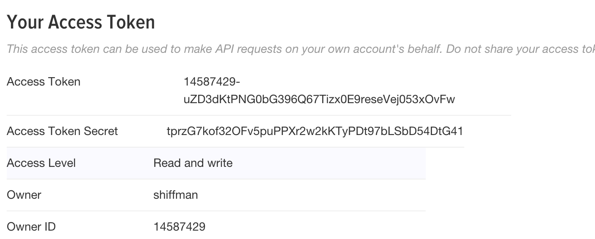

about
syllabus
All example source code
Some APIs require a level of authentication that can’t be done from client-side JavaScript. A prime example of this is the Twitter API which requires something known as OAuth. For basic API querying, you don’t need to go to deep into the inner workings of authenticating. With node, you can pick one of many node packages that help you connet and query the API. The one I’m using for these examples is called Twit.
Before you can use Twit, you need to follow a few steps.
Create a twitter account. You might already have one, but depending on what you are doing, you may want to create a new account to associate with your app. For example, I am using this account for all of these examples.
Create an “APP”. This can be done by on the manage your apps developer page. One tricky thing here is that to do this you are required to associate a phone number with the account in order to use the API. You can temporarily enter your own number or else sign up for a free one with Twilio or Google Voice.
To create the app, you’ll need to enter an app name, description, and associated website (can be anything for now). You can leave the “callback” field blank.

Also, scroll down and click the “Generate Access Token” button. Now you also have an “Access Token” and “Access Token Secret”.

Don’t worry, if you ever post these keys somewhere by accident (like in an image file on a tutorial) you can always regenerate new ones.
That’s it, you’re done and ready to use Twit!
To make any calls to the API you first need to install Twit and then include the package with require().
$ npm install Twit --savevar Twit = require('twit');And then you’ll need to authenticate with all those secret keys. There are a variety of ways to do this. The easiest is just typing your keys into your code:
var T = new Twit({
consumer_key: 'YOURCONSUMERKEY',
consumer_secret: 'YOURCONSUMERSECRET',
access_token: 'YOURACCESSTOKEN',
access_token_secret: 'YOURACCESSTOKENSECRET'
});This may cause you some problems down the road, however, if you want to publish your code. One way you can get around this is by putting your keys in a separate file called, say, config.js.
module.exports = {
consumer_key: 'YOURCONSUMERKEY',
consumer_secret: 'YOURCONSUMERSECRET',
access_token: 'YOURACCESSTOKEN',
access_token_secret: 'YOURACCESSTOKENSECRET'
}Now you can access this also with require().
var config = require('./config.js');
var T = new Twit(config);This way if you want to share or publish your code, you can do so leaving out the config.js file. This is what I’ve done in this repo here, though I’ve included a config-empty.js file with some comments on how to enter the tokens.
Full documentation of the various Twit methods is available on github, but I’ll highlight what you need here for a basic p5.js sketch or bot.
There are three main calls you can make with Twit: get(), post(), and stream().
get() is useful for looking at particular tweets. For example, if you want to just search for tweets that match a given keyword, are from a particular user, etc. you can use get(). The following asks for the 10 most recent tweets with the keyword JavaScript. The callback for receiving the data is gotData().
T.get('search/tweets', { q: 'JavaScript', count: 10 }, gotData);All of the arguments you can pass to the search can be found here. In addition to the search text, you can search for tweets from a particular location or from a certain time period, and more.
What you get back is just a lot of JSON as outlined here. So for example, if you look at the text of the tweets you would say:
function gotData(err, data) {
var tweets = data.statuses;
for (var i = 0; i < tweets.length; i++) {
console.log(tweets[i].text);
}
}The post() function is used to post an actual tweet itself.
T.post('statuses/update', { status: 'I am tweeting via the API!' }, tweeted);The tweeted() callback is where you can check whether the tweet was successfully posted or not.
Included in this week’s examples is an example that expands on the above. Features include (1) searching the Twitter API and returning the results as JSON for client-side JavaScript to parse and (2) receiving a tweet via a URL query string and passing it along via the API to be posted.
There’s not much left to say about writing a bot. All of the pieces you need are in the above sections. And none of the additional complexity of a web server via express is needed. The bot is simply just a process that executes every so often and tweets something based on some sort of algorithm or data source.
The easiest way to “schedule” a bot is to use JavaScript’s setInterval() function. For example, take the following:
// Set up Twit
var Twit = require('twit');
var config = require('./config.js');
var T = new Twit(config);
// Once every hour
setInterval(tweeter, 60*60*1000);With the above code, the function tweeter() is triggered once per hour (an hour is 60 minutes, a minute is 60 seconds, a second is 1,000 milliseconds). All that is left to do is have tweeter() tweet something. For example:
// A function that tweets a random number!
function tweeter() {
var num = Math.floor(Math.random()*100);
var tweet = 'Here\'s a random number between 0 and 100: ' + num;
T.post('statuses/update', { status: tweet }, tweeted);
}That’s it! Your first twitter bot. Of course you might want to do something more involved, like generate from a markov chain, or mix up text from some other API, etc. But for any of these ideas the above structure will work.
Here’s an example of a twitter bot using a Context-Free Grammar to generate tweets.
The above bot scenario involved tweeting every N milliseconds. This is what you think of when you think of some sort of autonomous robot tweeting. It operates on its own, never gets tired, and tweets at a precise time. But it is also possible to create a bot that participates in the social activity of twitter itself. This can be accomplished using stream(). The Twitter streaming API allows you to execute callbacks when certain events occur – like when someone follows you.
There are different kinds of streams – a “public” stream, a “user” stream, and a “site” stream (documentation). Here, I’ll use the “user” stream to demonstrate a “follow event”.
// A user stream
var stream = T.stream('user');
// When someone follows the user
stream.on('follow', followed);
// In this callback we can see the name and screen name
function followed(event) {
var name = event.source.name;
var screenName = event.source.screen_name;
console.log('I was followed by: ' + name + ' ' + screenName);
}Now you could just add a post() to tweet back "Thanks for following me!" + screenName!
You can also trigger an events whenever the user is mentioned in a tweet.
stream.on('tweet', tweetEvent);Now this event is triggered both when the user is mentioned and when the user itself tweets. So if you want to only get @replies you could add a check in the callback like:
function tweetEvent(tweet) {
var reply_to = tweet.in_reply_to_screen_name;
// Check to see if this was, in fact, a reply to you
if (reply_to === 'yourusername') {
// Get the username and content of the tweet
var name = tweet.user.screen_name;
var txt = tweet.text;
// Tweet back a reply?
}
}Here’s an example of a bot that replies to all @mentions with the same exact text in reverse.
The same search I used in the get() examples can also be accessed as a stream. For example, to get a continuous stream of all tweets from a certain geolocation:
// A geo location
var sanfran = [ '-122.75', '36.8', '-121.75', '37.8' ]
var stream = T.stream('statuses/filter', { locations: sanfran })
stream.on('tweet', tweetEvent);